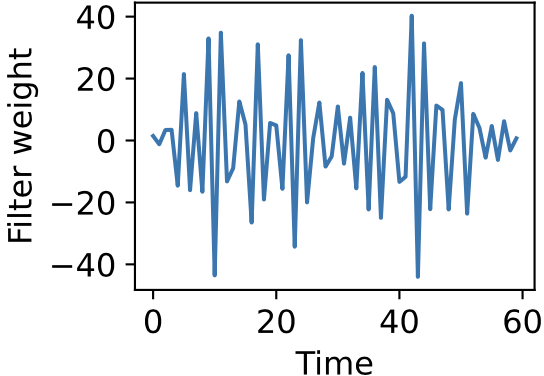
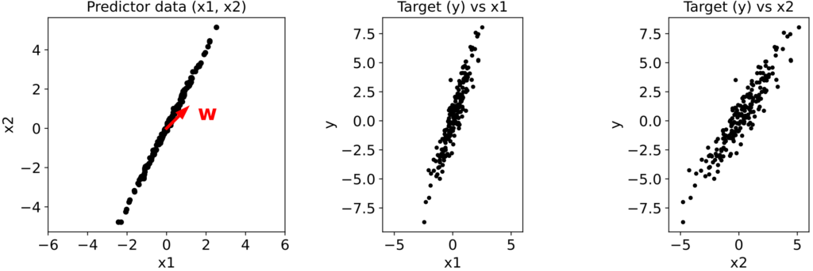
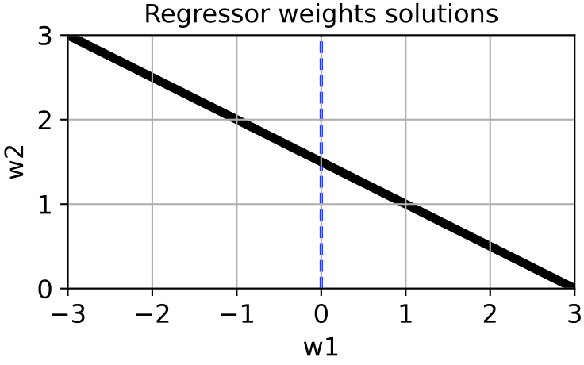
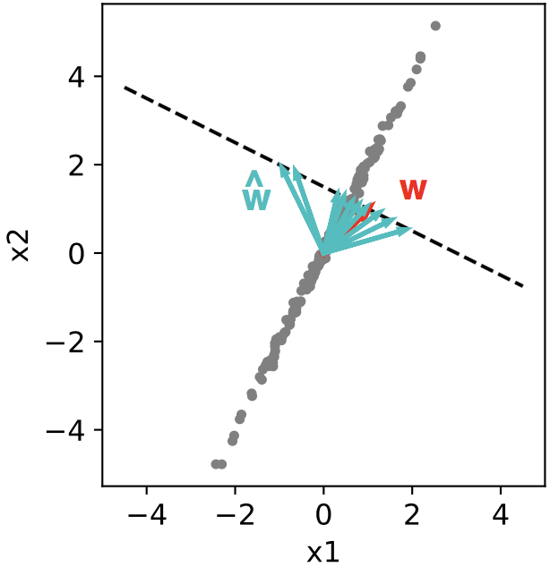
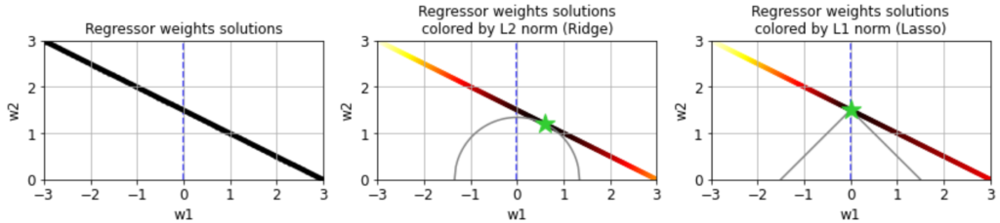
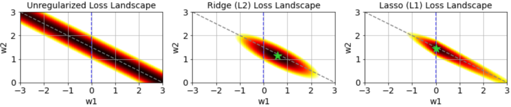
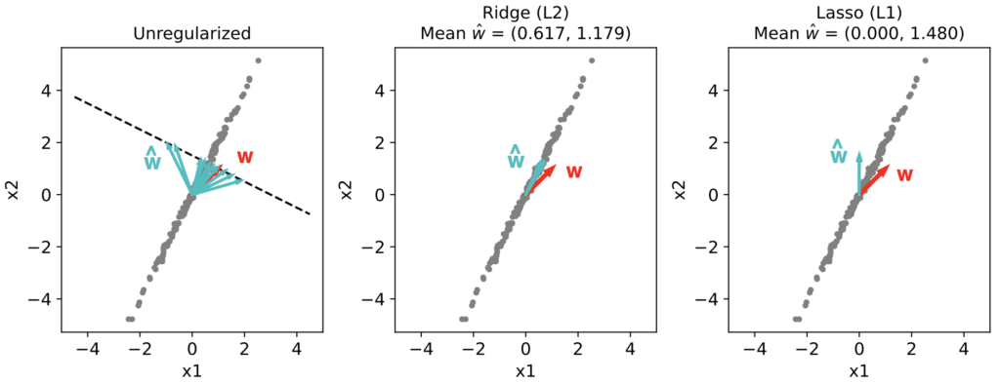
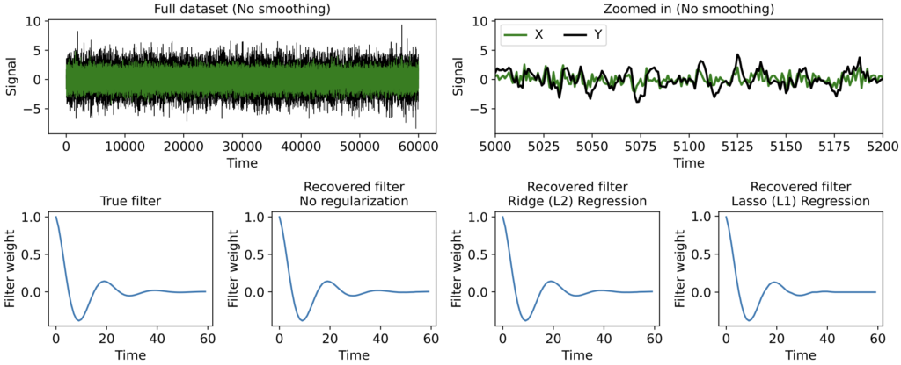
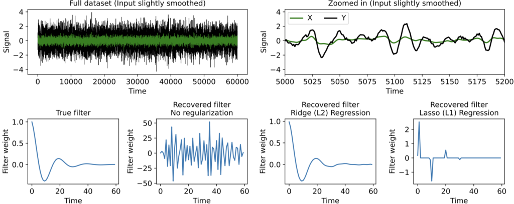

Using regularization to handle correlated predictors
TL;DR: Correlated predictors can yield huge instabilities when estimating weights in regression problems. Different regularization methods tame these instabilities in different ways.Regularization is usually introduced as a solution to overfitting. By penalizing certain parameter combinations it can improve how models generalize to held-out data by discouraging them from fitting every wiggle of the training data. This is especially useful when your data is high-dimensional relative to the total number of data points.
But regularization can serve another crucial purpose: taming instabilities in parameter estimates caused by highly correlated predictors. Highly correlated predictors (often referred to as multicollinearity) are pervasive in data analysis and can cause a lot of trouble, but in my experience how to handle them is less discussed.
One domain replete with trouble-making predictor correlations is time-series analysis, since signal values at nearby timepoints are often very similar. When estimating the linear filter that best maps one time-series to another, ordinary linear regression often yields something like this:
Strangely, this can occur even when you have many more independent data points than filter weights, so it's not caused by overfitting. In fact such an estimate may actually predict held-out data pretty well. It's quite messy and hard to interpret, however, and repeating the fit on different training data can yield wildly different estimates.

Why does this occur? And what can we do about it?
A simple example of correlated predictors yielding unstable weight estimates
Suppose we're predicting a target variable y from two predictors \( x_1 \) and \( x_2 \), whose relationship is
\[ y = x_1 + x_2 + \eta_y \]where \( \eta_y \) is noise. We can also write this as
\[ y = \mathbf{w}^T \mathbf{x} + \eta_y \]where \( \mathbf{w} = (1, 1)^T \) and \( \mathbf{x} = (x_1, x_2)^T \). And suppose that x_1 and x_2 are not independent but highly correlated, e.g.
\[ x_2 = 2x_1 + \eta_x \]where \( \eta_x \ll 1 \). In other words \( x_2 \) is twice \( x_1 \) plus a bit of noise. Maybe we've measured two very similar input variables like one audio signal through two microphones, or maybe our automated segmentation of a neural calcium imaging video has split a single neuron into two regions doing basically the same thing.
Let's generate 200 data points and plot \( x_2 \) vs \( x_1 \), \( y \) vs \( x_1 \), and \( y \) vs \( x_2 \):

The ground truth weight vector \( \mathbf{w} = (1, 1)^T \) is shown in red.
Estimating the weights via unregularized linear regression
Now, because our two predictors are highly correlated, we have
\[ x_2 \approx 2x_1, \]and so
\[ y = x_1 + x_2 + \eta_y \approx 3x_1 + \eta_y \approx 1.5x_2 + \eta_y \approx 5x_1 - x_2 + \eta_y\]and so on. Thus, effectively there isn't one best weight estimate, but a whole space of equally good estimates, defined by the line \( w_1 + 2w_2 = 3 \):

Which particular choice of \( \mathbf{w} \) gets picked out by unregularized linear regression will depend much more on the particular noise instantation ηy than the relationship between \( x_1 \), \( x_2 \), and \( y \).
If we use scikit-learn's linear_model.LinearRegression to find the best estimate \( \hat{w} \) given different \( \eta_y \) we get a wide range of answers (cyan), all lying on the line \( w_1 + 2w_2 = 3 \):

Importantly, none of these estimates are bad at predicting held-out data. The weight estimator here just has a high variance. If many predictors are involved, e.g. inputs at different lags in a time-series dataset, this can make the recovered weight vectors or filters messy and hard to interpret, even if they generalize quite well.
Modifying the loss function with Ridge (L2) or Lasso (L1) regularization
How do we fix this? Because many different weight estimates may be equally good at predicting held out data, there is not necessarily a single best method. What we can do, however, is understand how different ways of modifying ordinary linear regression affect our estimate of \( \mathbf{w} \).
Ordinary, unregularized linear regression minimizes the loss function
\[\mathcal{L}(\mathbf{w}) = \frac{1}{N}\sum_{i = 1}^N (y_i - \hat{y}_i)^2 \]where
\[ \hat{y}_i = w_1x_1 + w_2x_2 + ... \]i.e. it minimizes the squared error between the true targets and the predictions from the inputs given the weights.
One popular regularization method, called Ridge Regression (originally developed, in fact, to address multicollinearity [Hoerl and Kennard 1970]), adds an "L2 penalty" to the loss function:
\[\mathcal{L}(\mathbf{w}) = \frac{1}{N}\sum_{i = 1}^N (y_i - \hat{y}_i)^2 + \alpha \lVert \mathbf{w} \rVert_2^2 \]where \( \alpha \) is positive and the L2 norm of a vector is its Euclidean distance from the origin:
\[\lVert \mathbf{w} \rVert_2 = \sqrt{w_1^2 + w_2^2 + w_3^2 + ...} .\]This means that the estimator will prefer weight vectors that are closer "as the crow flies" to the origin.
A second regularization method, called Lasso Regression, instead adds an "L1 penalty" to the loss function:
\[\mathcal{L}(\mathbf{w}) = \frac{1}{N}\sum_{i = 1}^N (y_i - \hat{y}_i)^2 + \alpha \lVert \mathbf{w} \rVert_1 \]where the L1 norm is
\[ \lVert \mathbf{w} \rVert_1 = |w_1| + |w_2| + ... \]also sometimes called the city-block or Manhattan norm, which is the distance from \( \mathbf{w} \) to the origin if you can only move vertically and horizontally. Lasso therefore favors \( \mathbf{w} \)'s with smaller L1 norm.
The difference between Ridge and Lasso may seem a bit subtle but yields qualitative differences in the regression results. If we color the solution space for \( \mathbf{w} \) by their L2 (Ridge) or L1 (Lasso) norm, we can see that the L2 norm is minimized at the intersection (green star) of the solution space for \( \mathbf{w} \) and the circle around the origin that touches it, whereas the L1 norm is minimized where the diamond around the origin touches the solution space for \( \mathbf{w} \).

This is because circles (or spheres in higher dimensions) correspond to sets of weight vectors with constant L2 norm, whereas diamonds correspond to sets of weight vectors with constant L1 norm. The L2 or L1 norm of any \( \mathbf{w} \) in our solution space is in turn given by the "radius" of the circle or diamond that intersects it. The diamond with radius 1.5, for instance, is the smallest one that intersects this solution space, and therefore the minimum L1 norm of \( \mathbf{w} \) on this space is 1.5.
We can also show a larger region of the unregularized, Ridge, or Lasso loss functions using the equations above, where hotter colors represent larger loss and the green star shows the minimum:
The loss landscape for unregularized regression does not have a well defined minimum, which is why weight estimates given different noise instantiations have such high variance. The Ridge and Lasso losses, however, are minimized at a single point, which will dramatically reduce this variance.
The locations of the Ridge and Lasso minima are important. Notably, the "pointiness" of the L1 diamond means the minimum L1 norm of some solution space will usually be on a subset of the coordinate axes of the complete space of \( \mathbf{w} \). This is why Lasso Regression is said to "sparsify" the weight estimate, usually assigning a nonzero weight to only one of several highly correlated predictors, and is why you'll frequently here "L1" and "sparsity" come up together in data analysis. Ridge Regression, on the other hand, yields a minimum that "balances" the weights assigned to correlated predictors: predictors with similar variance and predictive power get assigned similar weights. In time-series analysis this is why Ridge Regression tends to find smoother filters, since nearby input timepoints are often very similar in variance and predictive power of the output.
Regularizing the weight estimator for our toy dataset
Let's estimate \( \mathbf{w} \) for our toy dataset using scikit-learn's linear_model.Ridge or linear_model.Lasso methods, for several noise instantiations:

As we can see, the variance of the Ridge and Lasso estimators drops almost to zero. The Ridge estimate points along the long axis of the input distribution, "balancing" the weights in accordance with their variance and predictive capacity. Lasso, on the other hand, assigns a nonzero weight only to \( x_2 \), "sparsifying" the weight estimate as we predicted from the arguments above. For a larger number of predictors Lasso will usually assign nonzero weights to only a subset of the predictors.
Notice, however, that neither estimate corresponds to the true w used to generate the data. Really, there isn't a (unique) ground truth solution here, since all w's along the line \( w_1 + 2w_2 = 3 \) are effectively equal. Different regularizers simply yield different estimates.
When using Ridge or Lasso we have to choose a value for \( \alpha \), which we can't necessarily do via cross-validation, since many solutions may be equally good at predicting held out data. Practically, there will often be a wide range of α that yield similar results, but ultimately the choice of \( \alpha \) is up to you, based on what you want your final weights to look like. Note that the larger the value of \( \alpha \), the farther the final weight estimate will lie from the unregularized solution space, since the optimization will more significantly trade off predictability of the target for smaller L2 or L1 norms of the weight vector.
Ridge and Lasso regularization can be applied to much more than just linear regression, simply by adding their corresponding terms to the relevant loss function. Once again, they can be relevant even outside the overfitting regime of high-dimensional but weakly sampled data.
A time-series example
Here's a more interesting application: estimating the linear filter that best maps one time-series to another, a common problem in neuroscience and many other fields.
First, let our input \( x(t) \) be a pure white-noise process, and we'll create an example output \( y(t) \) by passing the input through a known linear filter \( h(t) \) and adding a bit more noise:
\[ y(t) = x(t) \ast h(t) + \eta_y(t) . \]We then attempt to recover \( h(t) \) using linear regression.
When the input is perfectly white, we don't need any regularization to recover the true filter. This is because input signals at neighboring times are completely uncorrelated, so multicollinearity is not an issue.

But now suppose the input signal \( x(t) \) has been smoothed a bit (here convolved with a squared exponential kernel only 3 timesteps wide) before being filtered to produce the output y(t). This introduces correlations between \( x(t) \) at nearby timepoints, reflecting a common phenomenon when datasets comprise measured rather than computer-generated signals. Now regularization makes a huge difference.

As we can see, when no regularization is used the filter estimate is extremely messy. This occurs even though we have far more timepoints than filter parameters, so the messiness is not an overfitting issue -- it is instead caused by correlations in the input signal \( x(t) \). When we use Ridge or Lasso we get a much more interpretable estimate, with Lasso producing a clearly sparse filter.
Note again, though, that even though Ridge Regression gives a more accurate filter estimate in this particular example, there is rarely an objectively "best" regularization to use (nor will cross-validation be much help in deciding, since often many different filters predict held-out data equally well). Ultimately, which regularization method you use depends on what kind of structure you want to impose on the filter estimate. Ridge, for instance, tends to yield smoother filters in time-series data, whereas Lasso tends to find the best small set of time lags of the input needed to predict the output.
Other methods for handling multicollinearity
Ridge and Lasso Regression are not the only ways to deal with multicollinearity. Other methods include:
Basis functions: A common technique in time-series analysis is to represent filters as a weighted sum of a small number of basis functions. This reduces the number of weights to find and can be very useful, especially if projections of the inputs onto the different basis functions are not strongly correlated. However, be careful when making claims about how the filter shape reflects relationships among signals in your dataset, since the shape of the final filter estimate will be strongly influenced by your choice of basis functions.
Taking Fourier transforms: Convolution in the time domain is multiplication in the frequency domain. To find a linear filter you can thus Fourier transform your output and input time-series, take their quotient, and convert back to the time domain. However, this does not necessarily generalize well to problems with strong nonlinearities or where the output depends on multiple input time-series.
Elastic net regularization: Elastic net regularization lies in between Ridge and Lasso, penalizing the squared error loss function via a weighted sum of the L2 and L1 norms.
Principal component regression: You could also first apply principal component analysis (PCA) to your predictors and only keep the top principal components, which will be uncorrelated by construction, then predict the target using those. In our toy example, this would mean first studying the distribution of \( x_1, x_2 \) and deciding to replace the pair with only a single variable \( x^* \), and then finding the single weight that maps \( x^* \) to \( y \).
Averaging over trials: Another method is to perform unregularized linear regression on many trials or subsets of your training data, then average the resulting weight vectors. This can sometimes clean up otherwise messy weight estimates, but since multicollinearity yields weight estimates with such high variance, it can require a large number of trials.
Remember, whatever dataset you have, there may not be a best way to handle multicollinearity, as many options may be equally good when it comes to predicting held out data. The most important thing you can do is to understand how your analysis affects the structure of your results. In fact, this is true not just when handling correlated predictors, but essentially everywhere in the world of data analysis.
You can view or download the Jupyter notebook accompanying this post here.
Happy sciencing.